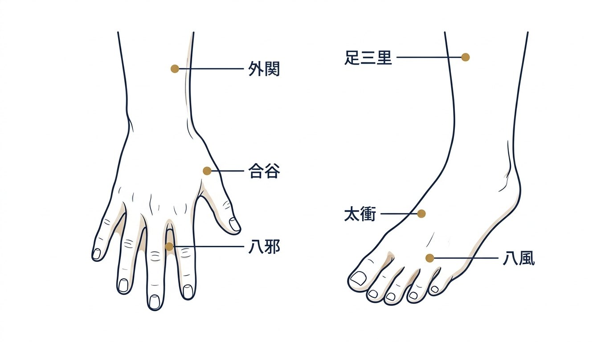

メラノーマの鍼灸
メラノサイト由来の悪性度が高い皮膚がん（悪性黒色腫）です。専門医の標準治療を最優先に、主治医許可のもと副作用やQOL向上を支えます。


院長YouTube解説・関連動画
健康のために知っておくだけで役立つ4選
①眠れない時は目を閉じて横になるだけで脳が休まる
目を閉じると視覚からの情報が遮断されて脳の後頭野が休息状態になります。これにより脳のエネルギー代謝が減少して全身のリラクゼーションが促進され、副交感神経が優位になり心拍数や呼吸が安定して体が休息状態になるのです。
②薬の飲み忘れは気づいたときに飲んでも良いのか
薬の効果は薬理動体学に基づいています。特に薬の血中濃度が半減する半減期に作用機序薬がどのように効果を出すかが大事です。薬の質にもよりますが、抗生物質は特定のタイミングで服用しないと耐性菌の発生を招く恐れがあるため飲み忘れには注意が必要です。
③唇の荒れ
唇は他の皮膚に比べて角質層が薄くセラミドや脂質のバリアが弱いため外部刺激に非常に敏感です。ヒアルロン酸やセラミドなどの保湿成分を多く含むリップクリームを使用しバリア機能を強化しましょう。
④ほくろがかゆい
ほくろ（色素性母斑）はメラノサイトの色素細胞の集まりです。痒みは炎症反応の1つでヒスタミンが発生することで痒くなります。急激な痒みや大きさの増加はメラノーマの兆候の可能性もあるため注意が必要です。
▼ 詳しく知りたい項目だけタップして開けます（全項目の医学解説を収録）
01. 原因とメカニズム
なぜ症状が起きるのか・鍼灸の作用機序を読む
▼
01. 原因とメカニズム
なぜ症状が起きるのか・鍼灸の作用機序を読む
メラノーマ（悪性黒色腫）は、メラニンを産生する細胞ががん化した悪性度の高い皮膚がんで、日本では10万人あたり約1〜2人に発症します。遺伝的要因と環境要因（紫外線や足裏・爪・摩擦部位への慢性的な外部刺激）が関与し、日本人に多い末端黒子型をはじめ表在拡大型・結節型・悪性黒子型の4型に大別されます。黒みを帯びたいびつな色素斑やしこりとして現れ、転移がなければ手術による予後は比較的良好ですが、転移時は分子標的薬や免疫チェックポイント阻害薬等の薬物療法と定期監視が重要です。
なぜ鍼灸で改善へ向かうのか？（作用機序の図解）
メラノーマに対する鍼灸は、迷走神経抗炎症反射と標準治療を支える支持療法機序を通じて、お体本来の回復力を引き出します。
手術創・リンパ節郭清側・患部を厳格に避け、内関・足三里・合谷など安全な経穴を刺激します。
内因性鎮痛系や延髄嘔吐中枢の抑制経路へ働きかけ、痛み・吐き気・しびれの軽減を助けます。
治療に伴う炎症性サイトカイン反応や過覚醒を穏やかに整え、倦怠感や不眠の負担を和らげます。
主治医の治療計画を最優先に、体力と生活の質を保ちながら治療を続けられる環境を支えます。
02. よくあるお悩み
このような症状はありませんか？（4項目）
▼
02. よくあるお悩み
このような症状はありませんか？（4項目）
- ✓手術や植皮術後の全身の緊張・倦怠感・不安を和らげたい
- ✓分子標的薬や免疫チェックポイント阻害薬に伴うだるさ・不眠がつらい
- ✓治療や再発への不安から自律神経が乱れている
- ✓リンパ節郭清後の体調管理を安全な範囲でサポートしてほしい
03. 当院の施術アプローチ
施術の進め方・改善のポイントを見る
▼
03. 当院の施術アプローチ
施術の進め方・改善のポイントを見る
04. ツボ詳細・セルフケア一覧
がん性疼痛・緩和ケアの全身アプローチツボ図解（6穴）
▼
04. ツボ詳細・セルフケア一覧
がん性疼痛・緩和ケアの全身アプローチツボ図解（6穴）
実際の施術ではお一人おひとりの体質・症状に合わせて選穴しますが、がん性疼痛・緩和ケアにおける標準治療併用の全身サポートの臨床でよく用いられる代表的なツボの目安です。
| ツボ名 | 位置の目安 | 主な狙い | セルフケアの注意点 |
|---|---|---|---|
| 百会（ひゃくえ） | 頭頂部の中央 | 痛みへの不安・気分の落ち込み・睡眠の質サポート | 体力を消耗しない極低刺激で穏やかに整えます。 |
| 内関（ないかん） | 手首の横ジワから指3本分肘寄りの中央 | 吐き気・胸の苦しさ・オピオイドに伴う不快感軽減 | 点滴や採血部位を避けて安全に刺激します。 |
| 合谷（ごうこく） | 手の甲、親指と人差し指の間 | 内因性鎮痛系（エンドルフィン等）の活性化 | 腫瘍部位や転移部位への直接刺鍼は行いません。 |
| 足三里（あしさんり） | 膝の下外側、指4本分下 | 胃腸機能・オピオイド便秘予防・体力維持 | 好中球・血小板低下時は刺さない温熱や指圧に切り替えます。 |
| 三陰交（さんいんこう） | 内くるぶしの上から指4本分上 | 下半身の冷え・睡眠・全身の自律神経バランス | 浮腫が強い部位は避け皮膚を傷つけないよう配慮します。 |
| 太衝（たいしょう） | 足の甲、親指と人差し指の骨の間 | 痛みに伴う緊張・怒りや焦燥感の鎮静 | 主治医・緩和ケアチームの鎮痛薬治療と併用します。 |
05. 医学的根拠・国際査読論文（PubMed / Cochrane）
科学的エビデンス・出典リンク一覧（4件）
▼
05. 医学的根拠・国際査読論文（PubMed / Cochrane）
科学的エビデンス・出典リンク一覧（4件）
国際的な医学データベース（PubMed・Cochrane等）で報告されているがん性疼痛・緩和ケアにおける標準治療併用の全身サポート領域の代表的な査読済み鍼灸研究をまとめています（標準治療との併用や研究上の限界を含めて正確に掲載）。
| 年・研究デザイン | 対象・規模 | 主な結果 | 限界・出典 |
|---|---|---|---|
| 2022年 国際診療ガイドライン | SIO-ASCO合同ガイドライン（227文献レビュー） | アロマターゼ阻害薬関節痛への鍼を推奨、一般的がん疼痛・筋骨格痛への鍼・指圧を推奨選択肢と明記（中等度）。 | がん自体を治す治療ではなく標準治療と併用する支持療法。 J Clin Oncol (PMID: 36122322) |
| 2020年 メタ解析 | がん関連疼痛 17 RCTs（n=1,111） | 偽鍼比で疼痛低減（MD -1.38）、鎮痛薬併用で疼痛低減（MD -1.44）およびオピオイド使用量減少（-30mg/日）。 | 異質性高くGRADE中等度。オピオイド調整は必ず主治医判断。 JAMA Oncol (PMID: 31855257) |
| 2020年 3群パイロットRCT | 化学療法誘発性末梢神経障害（CIPN）75名登録 | 通常ケア比で8週時の疼痛（p=0.05）・ピリピリ感（p=0.02）・しびれ（p=0.005）が有意改善、12週も持続。 | 単施設小規模パイロット試験。大規模検証が必要。 JAMA Netw Open (PMID: 32159808) |
| 2023年 メタ解析 | 化学療法誘発性悪心嘔吐（CINV）38 RCTs（n=2,503） | 通常制吐ケアへの併用で急性嘔吐（RR 1.13）・遅発性嘔吐（RR 1.47）の完全制御率が向上。 | GRADE低〜非常に低。標準制吐薬の上乗せ療法が前提。 Cancer Med (PMID: 37226372) |
参考文献・出典
- 2022年 国際診療ガイドライン（SIO-ASCO合同ガイドライン（227文献レビュー））— J Clin Oncol (PMID: 36122322)
- 2020年 メタ解析（がん関連疼痛 17 RCTs（n=1,111））— JAMA Oncol (PMID: 31855257)
- 2020年 3群パイロットRCT（化学療法誘発性末梢神経障害（CIPN）75名登録）— JAMA Netw Open (PMID: 32159808)
- 2023年 メタ解析（化学療法誘発性悪心嘔吐（CINV）38 RCTs（n=2,503））— Cancer Med (PMID: 37226372)
06. よくある質問（FAQ）
よくあるご質問を見る（2件）
▼
06. よくある質問（FAQ）
よくあるご質問を見る（2件）
Q. 免疫チェックポイント阻害薬や分子標的薬の治療中でも鍼灸を受けられますか？
主治医の許可があり、骨髄抑制や免疫関連の重い副作用（強い皮膚炎・下痢・呼吸器症状・内分泌異常等）が出ていない安定した時期であれば、倦怠感や不眠・不安を和らげる支持療法として対応します。
Q. 足裏や爪の気になるほくろに急なかゆみや変化がありますが相談できますか？
急激な大きさの変化やかゆみ・出血を伴う色素斑はメラノーマの兆候の可能性があるため、鍼灸ではなく直ちに皮膚科専門医を受診してください。
あわせて読まれる関連疾患（がんの種類）
アポクリン腺由来の皮膚がんです。専門医の手術や内臓精査を最優先に、主治医許可のもとで治療後の体調管理・QOL向上を支えます。
表皮内に留まる早期の皮膚がんです。皮膚科での手術切除を最優先に、主治医許可のもとで治療前後の心身負担を和らげる支持療法を行います。
皮膚がんの中で最多・悪性度の低い基底細胞がん。専門医の切除治療を最優先に、主治医許可のもと治療前後の心身負担を和らげる支持療法を行います。
表皮角化細胞由来の皮膚がんです。専門医の標準治療を最優先に、主治医許可のもとで治療後の体調管理やQOL向上を支える鍼灸を行います。
がんが分泌する物質や免疫反応で遠隔臓器に症状が出る症候群です。専門医の治療を最優先に、主治医許可のもとQOL向上を支える鍼灸を行います。
他臓器のがんが血流で脳へ転移した状態です。専門医の標準治療を最優先に、主治医許可と状態安定を前提にQOL向上を支える鍼灸を行います。
CLINICAL RECOVERY CASES
✨ 実際の臨床改善事例・回復経過を見る
銀座本院をはじめ各院での実際の改善事例を症状別に絞り込んでご確認いただけます。
おひとりで悩まず、まずはご相談ください
銀座本院・川口・大宮・横浜・博多・田無の各院でご予約を承っております。